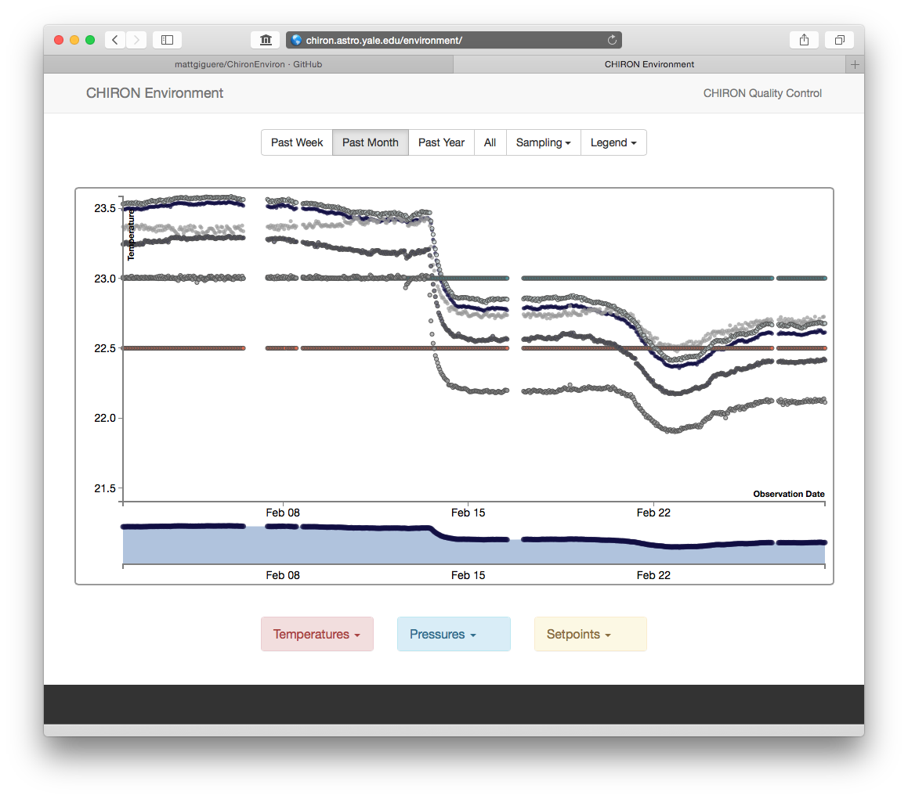

Side Projects
doglodge.io
A web app for finding the most dog-friendly hotels at a given destination.
The algorithm behind the back-end uses TFIDF, LinearSVC, and NearestCentroid
from scikit-learn, and the front-end is generated using Bootstrap and Flask.
New Haven Report Card
I participated in the 2015 Yale Data Hackathon, where I was part of a group that made a
"report card" card for the City of New Haven. My role included developing code for
extracting data from the SeeClickFix API, cleaning and transforming it, and loading it
into a MySQL database. I also made the front end, and interactive visualizations using
Bootstrap, D3.js, jQuery, and PHP.
electric
One day my mother-in-law and I were wondering which state had the most expensive
electric rates (adjusted for median household income). I spent a Sunday afternoon
looking into it. This
blog post contains my findings, and includes several interactive Tableau
visualizations showing electric rates and energy usage by state.
show more

ChironEnviron
An interactive web app that allows users to view the environmental time
series data for the CHIRON Spectrometer. The site and data pipeline were
made using Bootstrap,
D3.js, PHP, MySQL, python, jQuery, and shell scripts.

XKCD Downloader
Code to download all of the XKCD comics and their alt-text lines. Makes use
of BeautifulSoup for scraping, argparse, and urllib2. Great for screen savers!